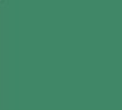
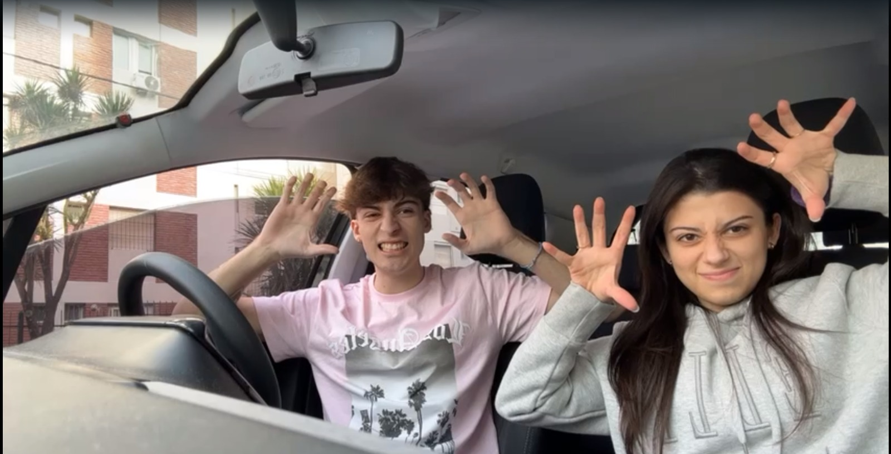

Te amo muchisimo mi amor
Ti amo tanto amore mio
je t'aime tellement mon amour
I love you so much my love
Bilingüe tu novio eh ๐
โคโคโคโคโคโคโคโคโคโคโคโคโคโคโคโคโคโคโคโคโคโคโคโคโคโคโคโคโคโคโคโคโคโคโคโคโคโคโคโคโคโคโคโคโคโคโคโคโคโคโคโคโคโคโคโคโคโคโคโคโคโคโคโคโคโคโคโคโคโคโคโคโคโคโคโคโคโคโคโคโคโคโคโคโคโคโคโคโคโคโคโคโคโคโคโคโคโคโคโคโคโคโคโคโคโคโคโคโคโคโคโคโคโคโคโคโคโคโคโคโคโคโคโคโคโคโคโคโคโคโคโคโคโคโคโคโคโคโคโคโคโคโคโคโคโคโคโคโคโคโคโคโคโคโคโคโคโคโคโคโคโคโคโคโคโคโคโคโคโคโคโคโคโคโคโคโคโคโคโคโคโคโคโคโคโคโคโคโคโคโคโคโคโคโคโคโคโคโคโคโคโคโคโคโคโคโคโคโคโคโคโคโคโคโคโคโคโคโคโคโคโคโคโคโคโคโคโค
Toma aca esta tu color favorito my girl

Pick one porque no se cual de los 3 es mejor (btw comiste ๐)
Bueno ahora hay q ver un par de fotos nuestras q para mi (PARA MI) son las mejores (pq salimos hermosos los 2, menos la de mix q no salimos ๐ญ)


Y la mejor para el final pq sali SUPER fachero ๐
Ah y te dejo una foto de tu comida favorita por supuesto ๐
Para nada son papas, nooo nada que ver eh ๐ค
Bueno pero en conclusion queria decirte que cada vez estoy mas y mas enamorado de vos y que me haces muy muy feliz. Gracias por siempre estar ahi para mi and thats why hice esto for you y lo mejor de todo es que hice esta pagina escuchando un verano sin ti, y nada, me pone muy feliz saber que voy a pasar el verano con la persona que mas amo en este mundo, Te amo โค